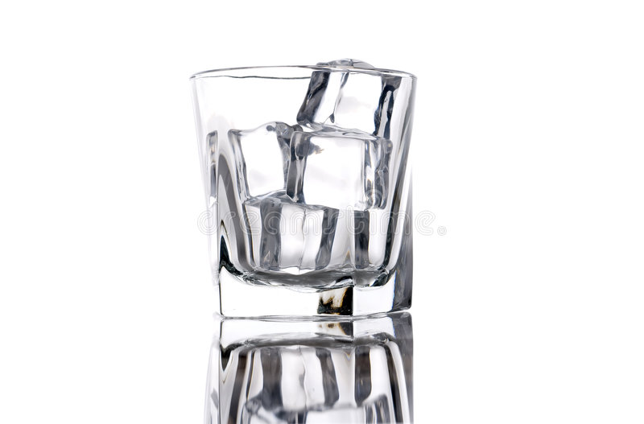

Ice
Ingredients
- Warm Water (Fruit Juice and some Soft drinks will also work!)
Tools
- Ice cube tray
- If you don't own an ice cube tray don't worry there a several alternatives. Silcone molds, ziploc bags, and empty drink contains.
- A serrated knife or possibly a hammer (Only if you don't own an ice cube tray.)
- A refrigerator or cooler
Steps
- First Freeze warm water in a refrigerator or cooler for 18 to 24 hours.
- Next Remove the ice from the cooler.
- Cut and/or smash the ice into cube shapes as closely as you can manage.